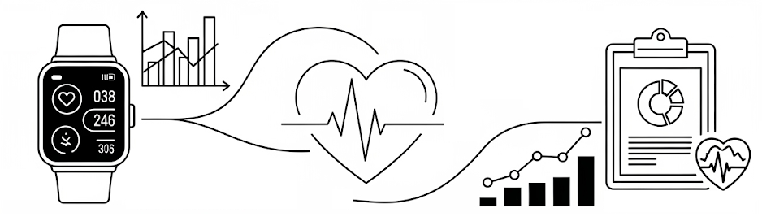

Overview
Health is inherently temporal. Biosignals, wearable streams, bedside monitors, longitudinal electronic health records (EHR), clinical notes, and imaging all evolve along a patient’s timeline. Learning from such data is challenging: sequences are often irregular, non-stationary, sparsely labeled, highly personalized, and temporally misaligned. These challenges intensify when integrating multiple modalities, where evidence must be aligned and fused across a shared timeline rather than analyzed in isolation.
The Learning from Time Series for Health (TS4H) workshop provides a dedicated forum for advancing temporal modeling in healthcare spanning foundational methods and multimodal integration to clinical deployment. Given the diversity and operational constraints of health data, we welcome contributions spanning both methodological innovation and practical translation. To bridge research and practice, TS4H also features a Demo Track showcasing interactive systems, visualization tools, and open-source implementations that demonstrate how temporal models can operate in real-world healthcare environments.
We invite you to submit your work on TS4H by January 30, 2026 (AOE).
View Call for Papers